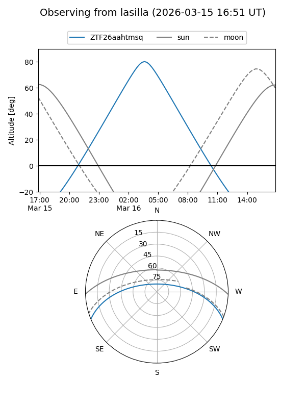
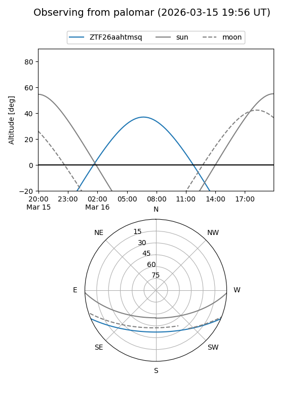

ZTF26aahtmsq
Target ZTF26aahtmsq at 2026-03-16 07:25
Aliases and brokers:
FINK: link
Lasair: link
ALeRCE: link
alt names
ZTF26aahtmsq (ztf,fink_ztf)
Coordinates:
equatorial (ra, dec) = 156.8533,-19.40450
equatorial (HMS+DMS) = 10:27:24.79,-19:24:16.21
galactic (l, b) = (262.1862,+31.84134)
Flags:
Photometry:
last ztfg=18.75
1 ztfg detections
Lightcurve
Visibility


Additional plots